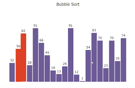

Array Sorting visualizer
Designed a clean and intuitive layout for a sorting algorithm visualizer using HTML and CSS. Structured the
interface with organized sections and styled elements to support user interaction and sorting algorithm selection.

Amazon clone
Designed and structured the product listings, homepage, and navigation bar using HTML and CSS, focusing on a clean, consistent layout and intuitive
user flow. Ensured visually appealing sections and smooth navigation to enhance the overall browsing experience.
Brain Health Monitor
Frontend implementation of a cognitive health tracker built using JavaScript, CSS, and HTML.
Core features include interactive memory testing (sequence recall game),
dynamic mood visualization using Chart.js, and local journaling with personalized entry management.